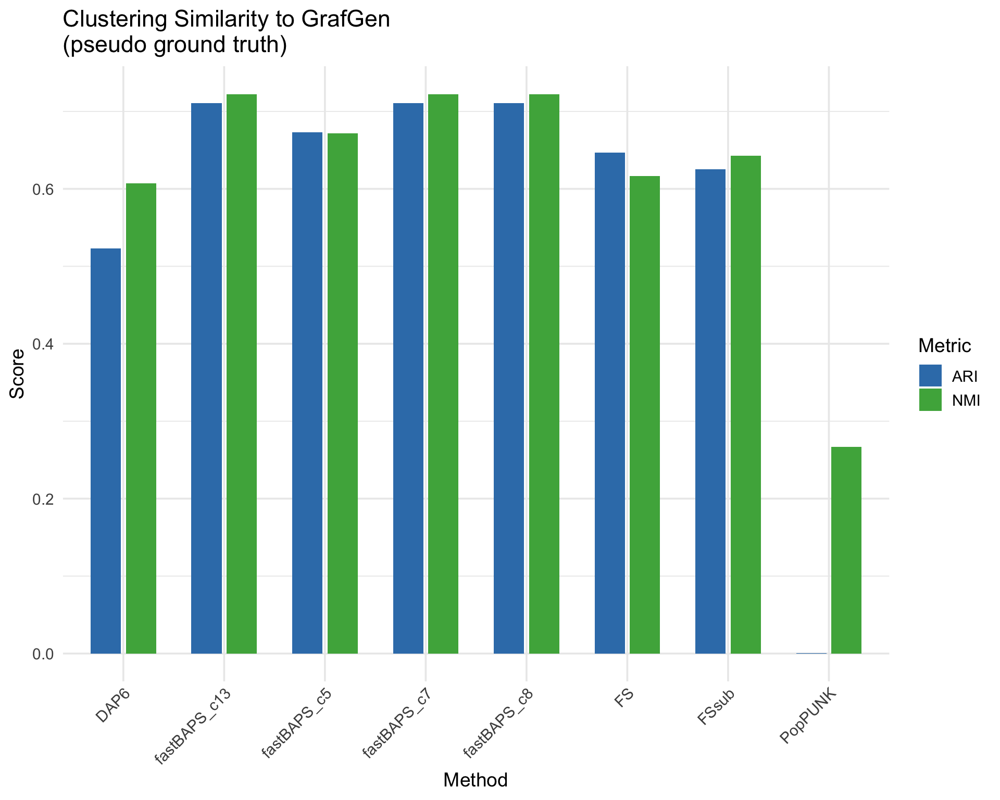
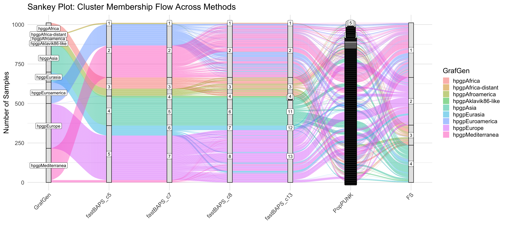
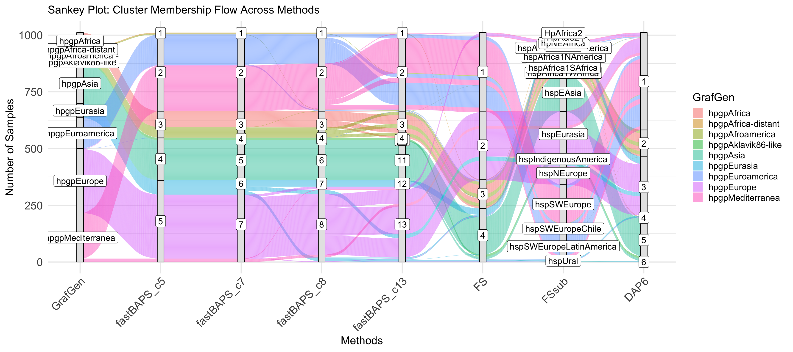
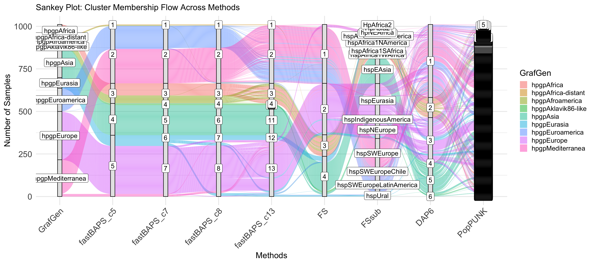
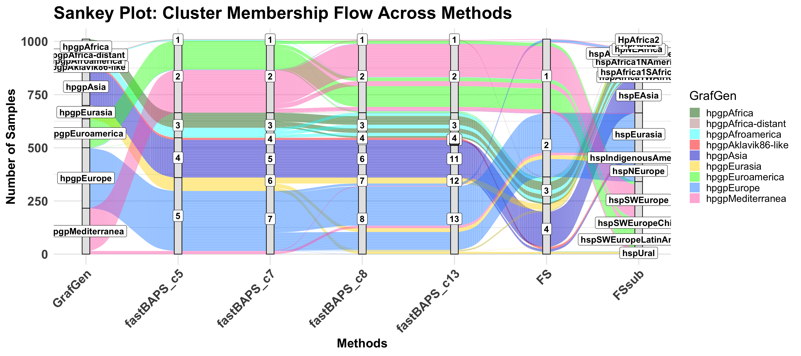

# Install packages if needed (uncomment if you haven't installed them)
# install.packages(c("mclust", "aricode", "ggplot2", "ggalluvial"))
library(mclust) # for adjustedRandIndex
library(aricode) # for NMI
library(ggplot2) # for plotting bar chart
library(ggalluvial) # for Sankey plotGrafGen Benchmark
1 Read CSV files
grafgen <- read.csv("data/grafgen_clusters.csv", header = TRUE)
fastbaps5 <- read.csv("data/fastBAPS_clusters_c5.csv", header = TRUE)
fastbaps7 <- read.csv("data/fastBAPS_clusters_c7.csv", header = TRUE)
fastbaps8 <- read.csv("data/fastBAPS_clusters_c8.csv", header = TRUE)
fastbaps13 <- read.csv("data/fastBAPS_clusters_c13.csv", header = TRUE)
poppunk <- read.csv("data/poppunk_clusters.csv", header = TRUE)
#finestructure <- read.csv("finestructure_clusters.csv", header = TRUE)
FS <- read.csv("data/FS_clusters.csv", header = TRUE)
FSsub <- read.csv("data/FSsub_clusters.csv", header = TRUE)
DAPC6 <- read.csv("data/DAPC6_clusters.csv", header = TRUE)2 Merge by Sample
merged <- Reduce(function(x, y) merge(x, y, by = "Sample"),
list(grafgen, fastbaps5, fastbaps7,
fastbaps8, fastbaps13, FS, FSsub, DAPC6, poppunk))
# Rename cluster columns for clarity
#colnames(merged) <- c("sample_id", "GrafGen", "fastBAPS", "PopPUNK",
# "fineSTRUCTURE")
colnames(merged) <- c("sample_id", "GrafGen", "fastBAPS_c5",
"fastBAPS_c7", "fastBAPS_c8", "fastBAPS_c13",
"FS", "FSsub", "DAPC6", "PopPUNK")3 Convert clusters to factors (important for ARI/NMI)
merged$GrafGen <- as.factor(merged$GrafGen)
merged$fastBAPS_c5 <- as.factor(merged$fastBAPS_c5)
merged$fastBAPS_c7 <- as.factor(merged$fastBAPS_c7)
merged$fastBAPS_c8 <- as.factor(merged$fastBAPS_c8)
merged$fastBAPS_c13 <- as.factor(merged$fastBAPS_c13)
merged$PopPUNK <- as.factor(merged$PopPUNK)
merged$FS <- as.factor(merged$FS)
merged$FSsub <- as.factor(merged$FSsub)
merged$DAPC6 <- as.factor(merged$DAPC6)4 Compute ARI and NMI scores (each method vs GrafGen)
ari_vals <- c(
adjustedRandIndex(merged$GrafGen, merged$fastBAPS_c5),
adjustedRandIndex(merged$GrafGen, merged$fastBAPS_c7),
adjustedRandIndex(merged$GrafGen, merged$fastBAPS_c8),
adjustedRandIndex(merged$GrafGen, merged$fastBAPS_c13),
adjustedRandIndex(merged$GrafGen, merged$FS),
adjustedRandIndex(merged$GrafGen, merged$FSsub),
adjustedRandIndex(merged$GrafGen, merged$DAPC6),
adjustedRandIndex(merged$GrafGen, merged$PopPUNK)
)
nmi_vals <- c(
NMI(merged$GrafGen, merged$fastBAPS_c5),
NMI(merged$GrafGen, merged$fastBAPS_c7),
NMI(merged$GrafGen, merged$fastBAPS_c8),
NMI(merged$GrafGen, merged$fastBAPS_c13),
NMI(merged$GrafGen, merged$FS),
NMI(merged$GrafGen, merged$FSsub),
NMI(merged$GrafGen, merged$DAPC6),
NMI(merged$GrafGen, merged$PopPUNK)
)
methods <- c("fastBAPS_c5", "fastBAPS_c7", "fastBAPS_c8",
"fastBAPS_c13", "FS", "FSsub", "DAPC6", "PopPUNK")5 Prepare data frame for bar plot
df_plot <- data.frame(
Method = rep(methods, 2),
Metric = rep(c("ARI", "NMI"), each = length(methods)),
Score = c(ari_vals, nmi_vals)
)6 Bar plot of ARI and NMI scores
#pdf(file="results/ARI-NMI.barplot.pdf")
ggplot(df_plot, aes(x = Method, y = Score, fill = Metric)) +
geom_bar(stat = "identity",
position = position_dodge(width = 0.7),
width = 0.6) +
labs(title = "Clustering Similarity to GrafGen\n(pseudo ground truth)",
y = "Score",
x = "Method") +
scale_fill_manual(values = c("ARI" = "#377eb8", "NMI" = "#4daf4a")) +
theme_minimal(base_size = 14) +
# smaller `t` value moves it closer
theme(axis.text.x = element_text(angle = 45,
vjust = 1, # moves text downward, closer to axis
hjust = 1,
margin = margin(t = 0) # remove top margin
)
)
#dev.off()7 Prepare data for Sankey plot (all four methods)
df_sankey <- merged[, c("sample_id", "GrafGen",
"fastBAPS_c5",
"fastBAPS_c7",
"fastBAPS_c8",
"fastBAPS_c13",
"FS",
"FSsub",
"DAPC6",
"PopPUNK")]
head(df_sankey) sample_id GrafGen fastBAPS_c5 fastBAPS_c7 fastBAPS_c8
1 HpGP-ALG-001 hpgpMediterranea 2 2 2
2 HpGP-ALG-002 hpgpEuroamerica 2 2 2
3 HpGP-ALG-003 hpgpEuroamerica 2 2 2
4 HpGP-ALG-004 hpgpMediterranea 2 2 2
5 HpGP-ALG-005 hpgpMediterranea 2 2 2
6 HpGP-ALG-006 hpgpMediterranea 2 2 2
fastBAPS_c13 FS FSsub DAPC6 PopPUNK
1 2 1 hspSWEurope 1 2424
2 2 1 hspSWEurope 1 2423
3 2 1 hspSWEurope 1 2422
4 2 1 hspSWEurope 1 2421
5 2 1 hspSWEurope 1 2420
6 2 1 hspSWEurope 1 2419write.csv(df_sankey, file="results/df_sankey.csv")8 Create Sankey plot showing flow across clusterings
library(dplyr)
# Summarize counts for flows between GrafGen and fastBAPS (as example)
#flow_counts <- df_sankey %>%
# group_by(GrafGen, fastBAPS) %>%
# summarise(Freq = n()) %>%
# ungroup()
#pdf(file="results/Sankey.pdf", height=16, width=24)
# 8. Create Sankey plot showing flow across clusterings
ggplot(df_sankey,
aes(axis1 = GrafGen, axis2 = fastBAPS_c5, axis3 = fastBAPS_c7,
axis4 = fastBAPS_c8, axis5 = fastBAPS_c13, axis6 = PopPUNK,
axis7 = FS)) +
geom_alluvium(aes(fill = GrafGen), width = 1/12) +
geom_stratum(width = 1/12, fill = "gray90", color = "black") +
geom_label(stat = "stratum", aes(label = after_stat(stratum))) +
scale_x_discrete(limits = c("GrafGen", "fastBAPS_c5", "fastBAPS_c7",
"fastBAPS_c8", "fastBAPS_c13", "PopPUNK", "FS"),
expand = c(.05, .05)) +
theme_minimal(base_size = 18) +
theme(axis.text.x = element_text(angle = 45,
vjust = 1,
hjust = 1,
margin = margin(t = 0) # remove top margin
)) +
labs(title = "Sankey Plot: Cluster Membership Flow Across Methods",
y = "Number of Samples")
# 8.1 Create Sankey plot showing flow across clusterings
ggplot(df_sankey,
aes(axis1 = GrafGen,
axis2 = fastBAPS_c5,
axis3 = fastBAPS_c7,
axis4 = fastBAPS_c8,
axis5 = fastBAPS_c13,
axis6 = FS,
axis7 = FSsub,
axis8 = DAPC6)) +
geom_alluvium(aes(fill = GrafGen), width = 1/12) +
geom_stratum(width = 1/12, fill = "gray90", color = "black") +
geom_label(stat = "stratum", aes(label = after_stat(stratum)),
size = 5, fontface = "plain") +
# geom_text(data = flow_counts,
# aes(x = 1.5, y = Freq / 2 + cumsum(Freq) - Freq/2, label = Freq),
# inherit.aes = FALSE,
# size = 4) +
scale_x_discrete(limits = c("GrafGen",
"fastBAPS_c5",
"fastBAPS_c7",
"fastBAPS_c8",
"fastBAPS_c13",
"FS",
"FSsub",
"DAPC6"),
expand = c(.05, .05)) +
theme_minimal(base_size = 18) +
theme(
axis.title = element_text(face = "plain", size = 18), # bold axis titles
axis.text = element_text(face = "plain", size = 18), # bold axis text (ticks)
plot.title = element_text(face = "plain", size = 18), # bold and bigger title
axis.text.x = element_text(angle = 45,
vjust = 1, # moves text downward, closer to axis
hjust = 1,
margin = margin(t = 0) # remove top margin
)
) +
labs(title = "Sankey Plot: Cluster Membership Flow Across Methods",
x = "Methods",
y = "Number of Samples")
## all methods
# 8.2 Create Sankey plot showing flow across clusterings
ggplot(df_sankey,
aes(axis1 = GrafGen,
axis2 = fastBAPS_c5,
axis3 = fastBAPS_c7,
axis4 = fastBAPS_c8,
axis5 = fastBAPS_c13,
axis6 = FS,
axis7 = FSsub,
axis8 = DAPC6,
axis9 = PopPUNK)) +
geom_alluvium(aes(fill = GrafGen), width = 1/12) +
geom_stratum(width = 1/12, fill = "gray90", color = "black") +
geom_label(stat = "stratum", aes(label = after_stat(stratum)),
size = 5, fontface = "plain") +
# geom_text(data = flow_counts,
# aes(x = 1.5, y = Freq / 2 + cumsum(Freq) - Freq/2, label = Freq),
# inherit.aes = FALSE,
# size = 4) +
scale_x_discrete(limits = c("GrafGen",
"fastBAPS_c5",
"fastBAPS_c7",
"fastBAPS_c8",
"fastBAPS_c13",
"FS",
"FSsub",
"DAPC6",
"PopPUNK"),
expand = c(.05, .05)) +
theme_minimal(base_size = 18) +
theme(
axis.title = element_text(face = "plain", size = 18), # bold axis titles
axis.text = element_text(face = "plain", size = 18), # bold axis text (ticks)
plot.title = element_text(face = "plain", size = 18), # bold and bigger title
axis.text.x = element_text(angle = 45,
vjust = 1,
hjust = 1,
margin = margin(t = 0) # remove top margin
)) +
labs(title = "Sankey Plot: Cluster Membership Flow Across Methods",
x = "Methods",
y = "Number of Samples")
# 8.3 Create Sankey plot showing flow across clusterings, no PopPUNK and DAPC6
pdf(file="results/Sankey.pdf", height=16, width=30)
p <- ggplot(df_sankey,
aes(axis1 = GrafGen,
axis2 = fastBAPS_c5,
axis3 = fastBAPS_c7,
axis4 = fastBAPS_c8,
axis5 = fastBAPS_c13,
axis6 = FS,
axis7 = FSsub)) +
geom_alluvium(aes(fill = GrafGen), width = 1/12) +
geom_stratum(width = 1/12, fill = "gray90", color = "black") +
geom_label(stat = "stratum", aes(label = after_stat(stratum)),
size = 5, fontface = "bold") +
# geom_text(data = flow_counts,
# aes(x = 1.5, y = Freq / 2 + cumsum(Freq) - Freq/2, label = Freq),
# inherit.aes = FALSE,
# size = 4) +
scale_x_discrete(limits = c("GrafGen",
"fastBAPS_c5",
"fastBAPS_c7",
"fastBAPS_c8",
"fastBAPS_c13",
"FS",
"FSsub"),
expand = c(.05, .05)) +
theme_minimal(base_size = 20) +
theme(
axis.title = element_text(face = "bold", size = 20), # bold axis titles
axis.text = element_text(face = "bold", size = 20), # bold axis text (ticks)
plot.title = element_text(face = "bold", size = 28), # bold and bigger title
axis.text.x = element_text(angle = 45,
vjust = 1, # moves text downward, closer to axis
hjust = 1,
margin = margin(t = 0) # remove top margin
)
) +
labs(title = "Sankey Plot: Cluster Membership Flow Across Methods",
x = "Methods",
y = "Number of Samples")
print(p)
dev.off()quartz_off_screen
2 print(p)
9 Output ARI and NMI in a table and save to CSV
results_table <- data.frame(
Method = methods,
ARI = round(ari_vals, 3),
NMI = round(nmi_vals, 3)
)
print(results_table) Method ARI NMI
1 fastBAPS_c5 0.673 0.672
2 fastBAPS_c7 0.711 0.722
3 fastBAPS_c8 0.711 0.722
4 fastBAPS_c13 0.711 0.722
5 FS 0.647 0.617
6 FSsub 0.625 0.643
7 DAPC6 0.523 0.607
8 PopPUNK 0.001 0.267write.csv(results_table, "results/clustering_comparison_results.csv",
row.names = FALSE)